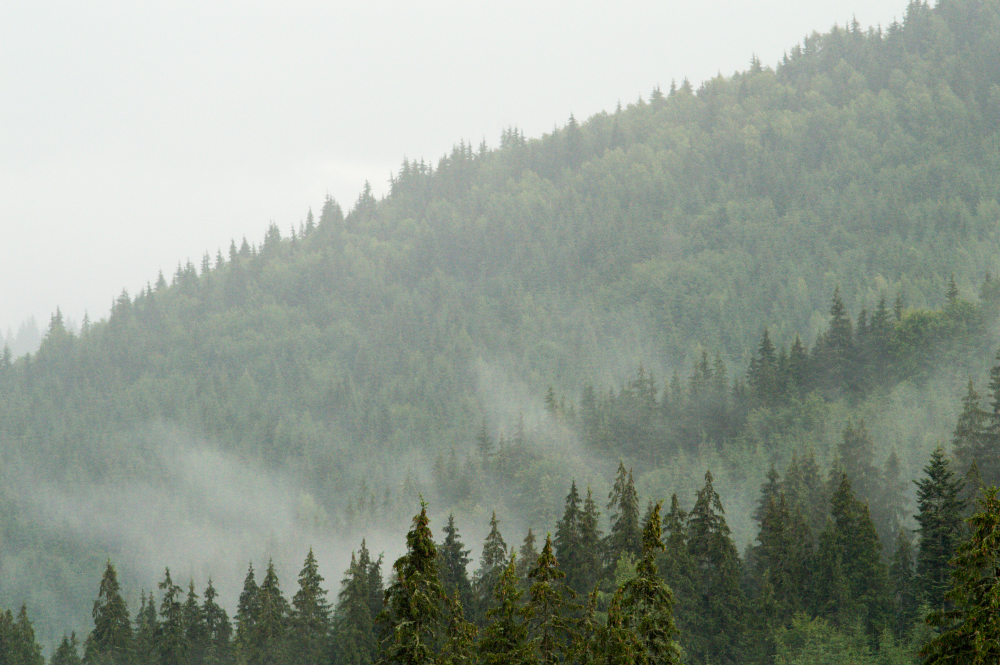

Українські Карпати — це частина гірської системи Карпат, яка розташована на заході України. Це місце, де душа відпочиває, а очі насолоджуються неймовірними краєвидами. Тут можна знайти як густі ліси, так і стрімкі річки.
Кожен сезон тут особливий:
Багато людей їдуть сюди, щоб втекти від міського шуму. Повітря тут чисте і свіже, що дуже корисно для здоров'я.
Це найвища точка України. Її висота складає 2061 метр. Піднятися на неї може навіть початківець, якщо обере найлегший маршрут. З вершини відкривається панорама на весь Чорногірський хребет.
Його ще називають "Морським оком" Карпат. Це найбільше гірське озеро України. Воно оповите легендами про кохання пастуха Вира та графської доньки Синь.
Перед поїздкою обов'язково перевірте цей список:
Ось приклад того, як правильно оформлювати зображення з підписом:
Щоб спланувати маршрут, ви можете використати Google Maps.
Повернутися на початок сторінки.